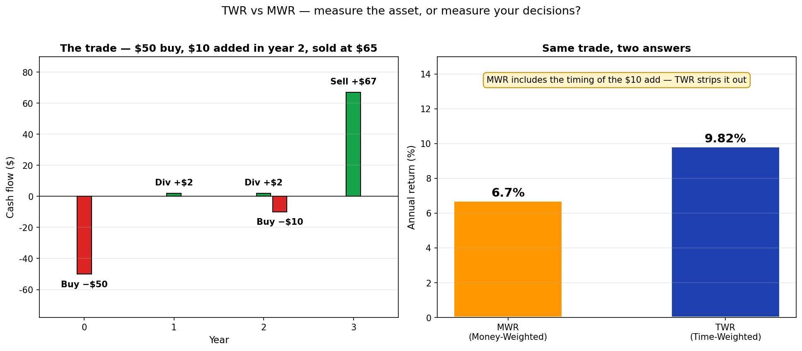

내 포트폴리오의 수익률은? — TWR vs MWR¶
같은 계좌, 같은 거래인데 증권사 앱과 직접 계산한 결과가 다르게 나온 적 있나요? 둘 다 정확합니다 — 다른 질문에 다른 답을 주고 있을 뿐입니다.
이 글은 그 차이의 정체를 그림으로 풀어 봅니다.
30초 요약 — 같은 거래, 두 가지 답¶
$50을 투자해 주식을 샀고, 매년 $2 배당을 받았습니다. 2년 차에 $10을 추가로 투입했고, 3년 후 $65에 매도했어요.
연수익률이 얼마였을까요?

- MWR (금액가중수익률): 6.70%
- TWR (시간가중수익률): 9.82%
같은 거래인데 결과가 다릅니다. 왜?
- TWR은 "자산이 얼마나 잘 굴러갔는가"를 측정 → 9.82% (자산 운용 능력)
- MWR은 "내가 결과적으로 얼마를 벌었는가"를 측정 → 6.70% (실제 내 수익)
3.12%p 차이는 2년 차에 $10 추가 매수 타이밍이 안 좋았기 때문입니다. 자산은 잘 굴러갔지만, 내 진입 타이밍이 결과를 낮췄어요.
증권사 앱마다 어느 쪽을 보여주는지 다릅니다. 이제 그 차이가 보이실 거예요.
1. 잠깐 복습 — 로그수익률은 더하기¶
지난 글의 핵심:
로그수익률 = ln(1 + 산술수익률) — 곱하기로 풀어야 할 일을 더하기로 바꿔주는 도구
가격 흐름이 다음과 같다면:
$1,000 → $2,000 → $2,200 → $1,800 → $900 → $1,300
전체 기간 로그수익률은 각 기간 로그수익률을 그냥 더하면 됩니다:
ln(2000/1000) + ln(2200/2000) + ln(1800/2200) + ln(900/1800) + ln(1300/900)
= ln(1300/1000) ← 중간 항이 모두 상쇄
≈ +26.2%

이 단순한 사실이 TWR과 MWR 모두의 출발점입니다.
2. 현금흐름이 끼면 식이 약간 달라진다¶
위 예시에서 $2,200일 때 $500을 인출했다고 합시다.
$1,000 → $2,000 → $2,200 → [-$500 인출] → $1,800 → $900 → $1,300
이 시점의 로그수익률 계산은 인출액을 빼주면 됩니다:
새 로그수익률 = ln (현재가 / (이전가 − 인출))
배당이 들어왔다면? 더해주면 됩니다:
배당 받았을 때 = ln ((현재가 + 배당) / 이전가)
배당 재투자 = ln (현재가 / (이전가 − 재투자))
같은 원리: 포트폴리오 가치를 정확하게 잡고 비율을 구하는 것. 어렵지 않아요.
📐 식 정리 (현금흐름 + 배당 종합)
일반 로그수익률 = ln (현재가 / 이전가)
+ 인출 시 = ln (현재가 / (이전가 − 인출))
+ 입금 시 = ln (현재가 / (이전가 + 입금))
+ 배당 시 = ln ((현재가 + 배당) / 이전가)
+ 배당 재투자 시 = ln (현재가 / (이전가 − 재투자))
3. 시간가중수익률 (TWR) — 자산을 측정한다¶
위에서 한 방식 — 기간별 로그수익률을 모두 더하기 — 이 바로 TWR(Time-Weighted Return) 입니다.
TWR이 측정하는 것¶
TWR은 자산 자체의 운용 성과를 봅니다. 현금흐름 효과를 제거해서 "이 펀드가 정말 잘 굴러갔는지"를 알려줍니다.
같은 펀드의 두 시나리오:
| 사례 A: 추가 매수 | 사례 B: 일부 매도 | |
|---|---|---|
| 초기 투자 | $1,000,000 | $1,000,000 |
| 6개월 후 잔고 | $1,162,484 | $1,162,484 |
| 6개월 차 행동 | +$100,000 추가 매수 | −$100,000 인출 |
| 12개월 후 잔고 | $1,192,328 | $1,003,440 |
| TWR | +9.34% | +9.34% |
A든 B든 TWR은 똑같이 +9.34%. 같은 펀드니까 — 펀드의 수익 능력은 같아요.
TWR이 답하는 질문¶
"이 펀드를 비교 평가하고 싶다. 매니저가 잘 굴렸는가?"
펀드 평가, 운용사 평가에 사용합니다. 모닝스타나 펀드 사이트에서 보는 수익률은 보통 TWR입니다.
4. 금액가중수익률 (MWR) — 내 결과를 측정한다¶
한 줄 요약: "들어온 돈 = 나간 돈"¶
돼지저금통을 생각해 봅시다. 동전을 넣고 빼고 또 넣고 — 마지막에 깨서 다 꺼내면 원래 들어간 만큼 나옵니다 (이자가 없다면). 들어온 돈 = 나간 돈.
같은 원리를 투자 포트폴리오에 적용하면:
들어온 돈의 양 = 나간 돈의 양 + 남은 돈의 양
투자 마지막에 다 팔아 버렸다고 가정하면 "남은 돈"은 0이 되어:
들어온 돈 = 나간 돈 ⇔ 현금흐름의 총합 = 0
(물리에서는 이걸 에너지 보존의 법칙이라고 하지만, 외울 필요는 없어요. 핵심은 총합이 0이라는 거.)
각 시점의 현금흐름을 IRR(내부수익률)로 할인해서 합이 0이 되는 IRR을 찾는 것 — 이게 MWR입니다.
들어오는 돈 vs 나가는 돈 (포트폴리오 기준)¶
| 들어오는 돈 (Inflow) | 나가는 돈 (Outflow) |
|---|---|
| 자산 매도 수익 | 자산 매수 비용 |
| 받은 배당·이자 | 배당·이자 재투자 |
| 추가 입금(contribution) | 인출(withdrawal) |
헷갈리지 마세요: 추가 입금은 들어오는 돈, 인출은 나가는 돈 — 포트폴리오 기준입니다.
30초 예제¶
$50 매수 → 1년 차 $2 배당 → 2년 차 $2 배당 → 3년 차 $65 매도 + $2 배당. 수익률은?
현금흐름:
t=0: -$50 (매수, outflow)
t=1: +$2 (배당, inflow)
t=2: +$2 (배당, inflow)
t=3: +$67 ($2 배당 + $65 매도, inflow)
구글시트에 한 줄:
=IRR(A1:A4) → 12.82%
끝입니다. 연 12.82%로 균등하게 운용한 것과 같은 결과라는 뜻이에요.
📐 IRR을 직접 풀어 보기 — 뉴턴법
`=IRR()` 함수가 내부적으로 어떻게 푸는지 궁금하면 — 뉴턴법(Newton's method)입니다. `X = 1/(1+IRR)`로 치환하면 3차 방정식이 됩니다:−50 + 2·X + 2·X² + 67·X³ = 0
5. TWR vs MWR — 결정적 차이¶
같은 거래, 두 가지 답¶
이 글 도입부의 예제로 돌아가 봅시다:
$50 매수 → 1년 차 $2 배당 → 2년 차 $10 추가 매수 + $2 배당 → 3년 차 $65 매도 + $2 배당
MWR 계산 — 추가 매수($10)는 outflow:
t=0: -$50
t=1: +$2
t=2: -$8 ($2 배당 - $10 추가매수)
t=3: +$67
=IRR(...) → 6.70%
TWR 계산 — 각 시점의 잔고를 알아야 합니다:
1년 차 종료 시 잔고: $55 (배당받기 직전)
2년 차 종료 시 잔고: $60 (배당받기·추가매수 직전)
3년 차 종료 시 잔고: $65 (매도가)
1년 차: ln((55 + 2)/50) = ln(57/50)
2년 차: ln((60 + 2)/(55 + 10)) = ln(62/65) ← 분모는 직전 잔고 + 추가매수
3년 차: ln((65 + 2)/60) = ln(67/60)
3년 합산 로그수익률을 연환산 → 연 9.82%
분자에는 그 기간 동안 들어온 모든 가치(잔고 + 배당), 분모에는 그 기간 시작 시점의 투자 원본(이전 잔고 + 추가매수). 이게 시간가중 계산의 핵심입니다.
왜 결과가 다른가¶
| TWR | MWR | |
|---|---|---|
| 9.82% vs 6.70% | 자산 자체의 운용 성과 | 내 진입·청산 타이밍까지 포함 |
| 2년 차 $10 추가 | 효과 제거됨 | 효과 반영됨 → 결과 끌어내림 |
| 메시지 | "이 펀드는 잘 굴렀다" | "근데 내가 들어간 시점이 안 좋았다" |
자산은 +9.82%로 잘 굴러갔습니다. 그러나 내가 2년 차에 추가 매수한 $10은 1년만 운용되어 약 $11 정도가 됐고(+10% 정도), 전체 수익률을 끌어내렸습니다. 이게 MWR이 보여주는 메시지 — 내가 결과적으로 6.70%만 벌었다는 사실입니다.
둘 중 뭐가 맞는가? — 둘 다 맞다, 다른 질문이다¶
| 질문 | 보세요 |
|---|---|
| "이 펀드 운용 잘하나?" | TWR (펀드 평가) |
| "내가 실제로 얼마 벌었나?" | MWR (개인 결과) |
| "ETF끼리 비교하고 싶다" | TWR (현금흐름 차이 제거) |
| "증권사 앱에서 보이는 수익률" | 보통 MWR (거래 내역만으로 계산 가능) |
증권사 앱이 MWR을 자주 쓰는 이유는 매일의 잔고를 추적하지 않아도 거래 내역만으로 바로 계산 가능하기 때문입니다. TWR은 현금흐름 발생 시점의 잔고를 모두 알아야 해서 더 무거워요.
TWR을 계산하지 못할 때¶
위 예제에서 잔고를 모르면 TWR은 계산 불가능합니다. 1년 차, 2년 차 현금흐름 시점의 잔고를 모르면 비율을 못 구해요.
이게 두 방법의 가장 큰 실용적 차이입니다:
- MWR: 거래 내역(현금흐름)만 알면 OK
- TWR: 잔고 정보까지 필요
6. 보너스 — DCF는 사실 MWR이다¶
기업가치 평가에서 자주 듣는 DCF(Discounted Cash Flow) — 미국채 금리가 오르면 성장주가 힘 못 쓴다는 그 단골 등장하는 개념 — 도 본질이 같습니다.
DCF (기업가치) = 자기자본 + Σ ( 미래 현금흐름 / (1 + 할인율)^t )
MWR (수익률) = NPV = 0 이 되는 IRR을 찾는 것
= Σ ( 현금흐름 / (1 + IRR)^t ) = 0
같은 식입니다. DCF는 미래 현금흐름을 무위험이율로 할인하고, MWR은 미래 현금흐름을 IRR로 할인합니다 — 다만 IRR이 미지수일 뿐이에요.
따라서 미국채 금리(=무위험이율)가 오르면 모든 미래 수익이 더 많이 할인되어 현재가치가 줄어듭니다. 이게 성장주가 금리 인상기에 부진한 이유입니다.
7. 정리¶
| 개념 | TWR (시간가중) | MWR (금액가중) |
|---|---|---|
| 무엇을 측정 | 자산 운용 성과 | 내 실제 투자 결과 |
| 현금흐름 효과 | 제거 | 포함 |
| 필요 정보 | 모든 시점의 잔고 + 거래 | 거래 내역만 |
| 계산법 | 기간별 로그수익률 합산 | NPV = 0이 되는 IRR (=IRR()) |
| 누가 쓰나 | 펀드 비교, 운용사 평가 | 증권사 앱, DCF |
| 이런 질문에 답 | 펀드가 잘 굴렀나? | 내가 얼마 벌었나? |
기억할 한 가지: 같은 거래에서 두 수익률이 다를 수 있습니다. 어느 한쪽이 정답이 아니에요 — 다른 질문에 다른 답입니다.
증권사 앱마다 어느 쪽을 표시하는지 한 번 확인해 보시고, 둘 다 보실 줄 알면 자기 투자를 훨씬 정확하게 평가할 수 있습니다.
이전 글: 수익률, 복리, 그리고 로그차트